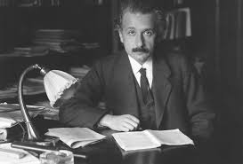

By 1908, he was recognized as a leading scientist and was appointed lecturer at the University of Bern. The following year, after giving a lecture on electrodynamics and the relativity principle at the University of Zürich, Alfred Kleiner recommended him to the faculty for a newly created professorship in theoretical physics. Einstein was appointed associate professor in 1909. Einstein became a full professor at the German Charles-Ferdinand University in Prague in April 1911, accepting Austrian citizenship in the Austro-Hungarian Empire to do so. During his Prague stay, he wrote 11 scientific works, five of them on radiation mathematics and on the quantum theory of solids. In July 1912, he returned to his alma mater in Zürich. From 1912 until 1914, he was a professor of theoretical physics at the ETH Zurich, where he taught analytical mechanics and thermodynamics. He also studied continuum mechanics, the molecular theory of heat, and the problem of gravitation, on which he worked with mathematician and friend Marcel Grossmann. On 3 July 1913, he was voted for membership in the Prussian Academy of Sciences in Berlin. Max Planck and Walther Nernst visited him the next week in Zurich to persuade him to join the academy, additionally offering him the post of director at the Kaiser Wilhelm Institute for Physics, which was soon to be established. (Membership in the academy included paid salary and professorship without teaching duties at the Humboldt University of Berlin.) He was officially elected to the academy on 24 July, and he accepted to move to the German Empire the next year. His decision to move to Berlin was also influenced by the prospect of living near his cousin Elsa, with whom he had developed a romantic affair. He joined the academy and thus the Berlin University on 1 April 1914. As World War I broke out that year, the plan for Kaiser Wilhelm Institute for Physics was aborted. The institute was established on 1 October 1917, with Einstein as its director.[69] In 1916, Einstein was elected president of the German Physical Society (1916–1918).[70] Based on calculations Einstein made in 1911, about his new theory of general relativity, light from another star should be bent by the Sun's gravity. In 1919, that prediction was confirmed by Sir Arthur Eddington during the solar eclipse of 29 May 1919. Those observations were published in the international media, making Einstein world-famous. On 7 November 1919, the leading British newspaper The Times printed a banner headline that read: "Revolution in Science – New Theory of the Universe – Newtonian Ideas Overthrown". In 1920, he became a Foreign Member of the Royal Netherlands Academy of Arts and Sciences. In 1922, he was awarded the 1921 Nobel Prize in Physics "for his services to Theoretical Physics, and especially for his discovery of the law of the photoelectric effect". While the general theory of relativity was still considered somewhat controversial, the citation also does not treat even the cited photoelectric work as an explanation but merely as a discovery of the law, as the idea of photons was considered outlandish and did not receive universal acceptance until the 1924 derivation of the Planck spectrum by S. N. Bose. Einstein was elected a Foreign Member of the Royal Society (ForMemRS) in 1921. He also received the Copley Medal from the Royal Society in 1925.
Einstein visited New York City for the first time on 2 April 1921, where he received an official welcome by Mayor John Francis Hylan, followed by three weeks of lectures and receptions. He went on to deliver several lectures at Columbia University and Princeton University, and in Washington, he accompanied representatives of the National Academy of Science on a visit to the White House. On his return to Europe he was the guest of the British statesman and philosopher Viscount Haldane in London, where he met several renowned scientific, intellectual and political figures, and delivered a lecture at King's College London
